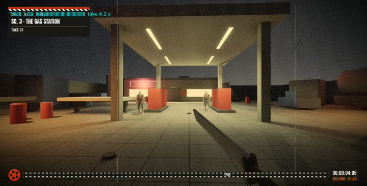
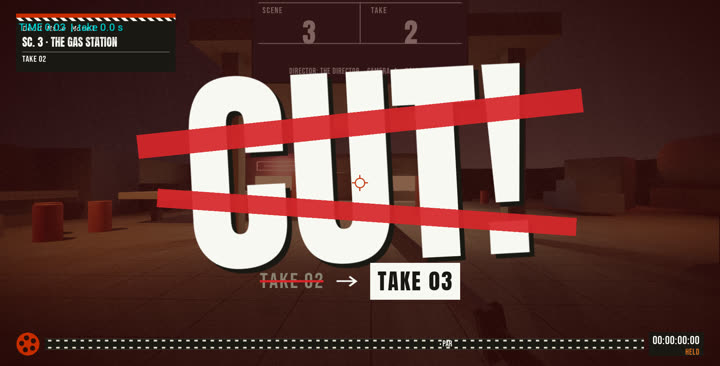
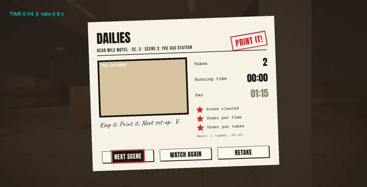

CUT! Take two. Print it.
The 13:30 reel shows most of a take for the first time: zombies walk in, one hit ends it with a CUT card, take two starts at once, and the scene ends on a dailies card.
Day 1, Thu 12 NovHour 9
Reel Time's loop is a film shoot. One hit and the Director yells cut. You go again straight away. Clear the scene and you get your dailies. Until this reel I'd only seen the first few seconds of that.
The retake is meant to be instant. This morning's headless test measured it at 0.33 seconds; on film the CUT card stays up for a couple of seconds first.

Take one, rolling. These two zombies are the new bodies from the NPC session, not mannequins.
The CUT card, from the UI session's rebuild of the Claude Design mockup.
Dailies: takes, running time against par, three stars, and NEXT SCENE, WATCH AGAIN or RETAKE.
The dailies
Clear the scene and the Director's line comes up, "Yes! That's the stuff!", then this card. It reads from real data: two takes, par of 1:15, three stars.
How it was played
Nobody held a controller. The Engine session can't press keys, so it drives the game with console commands on a timeline. This is the start of the script for this reel:
7.7s cmd rt.Player.Launch 500 0
13.8s shot hero_01
18.2s cmd rt.Debug.KillPlayer
18.8s shot cut_01
31.4s cmd rt.Flow.Clear
So this proves the flow, not the feel. The feel is for tonight, when I play it myself.
What the Engine's note says is wrong
The Engine wrote up its own reel, including what it didn't see:
- The CUT card says "TAKE 02 → TAKE 03" on the first cut. It's off by one.
- Take two gets no slate.
- "mark ring/beam and third-person replay NOT seen (replay skipped straight to dailies)".
- The dailies show a running time of 00:00 and an empty thumbnail.
- The small text in the top left corner is a debug readout of the time scale.
The replay is the one that matters. It's the point of the game, a headless test says it works, and it still hasn't appeared on film.